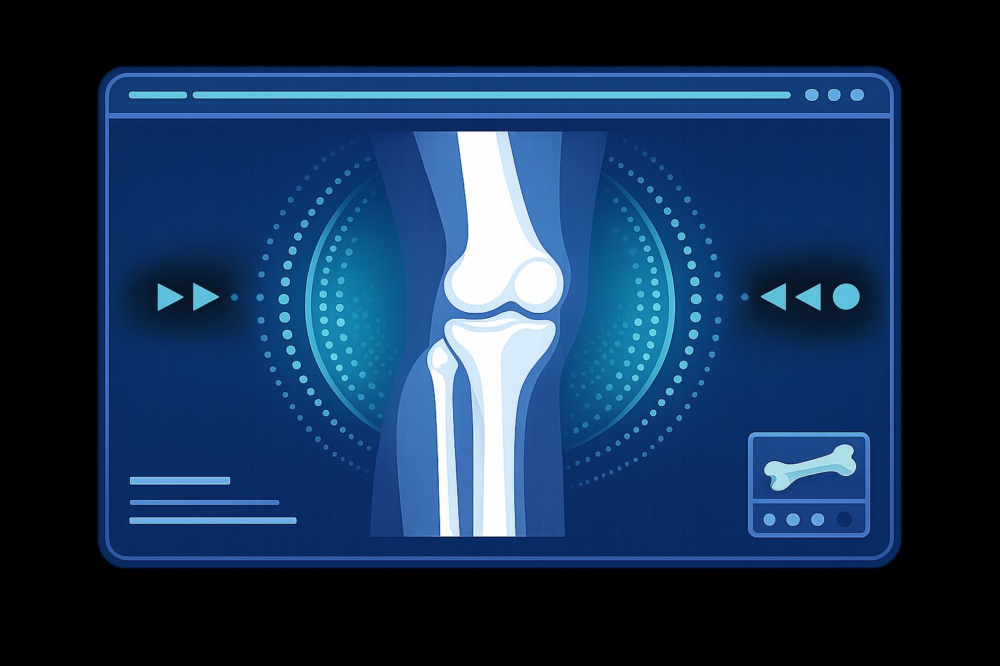

Ortopedia Geral
Avaliação e tratamento de doenças e deformidades do sistema locomotor.
Dr. Sandro Miguel Miranda Lopes
Atendimento especializado em Ortopedia e Traumatologia, com foco na recuperação funcional e na qualidade de vida dos pacientes.

O Dr. Sandro Miguel Miranda Lopes atua na área de Ortopedia e Traumatologia, prestando atendimento humanizado e individualizado, com foco na recuperação funcional e na qualidade de vida dos pacientes.
Com ampla experiência clínica, oferece avaliação completa, diagnóstico preciso e condutas terapêuticas atualizadas para condições ortopédicas e traumáticas, do diagnóstico ao acompanhamento pós-operatório.
Diagnóstico, tratamento e acompanhamento especializado para o sistema musculoesquelético — da coluna às extremidades.
Atendimento presencial na clínica ou pela internet, com a mesma qualidade e atenção em ambas as modalidades.
Consulta completa com exame físico, avaliação clínica detalhada, solicitação de exames e definição do plano de tratamento personalizado.
Atendimento por videoconferência para retornos, avaliação de exames e segunda opinião. Praticidade sem abrir mão da qualidade.
Entre em contato por e-mail para agendar sua consulta presencial ou teleconsulta com o Dr. Sandro.